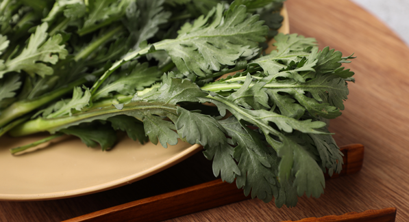

요즘 여성들은 물론, 주부들 사이에서 필수 비타민과 무기질을 섭취할 수 있는 '마시기' 주스에 대한 관심이 쏟아지고 있다. 여러 가지 이유 중 간편하게 우리 몸에 꼭 필요한 영양소를 제때 섭취할 수 있다는 점이 큰 화제를 모았던 것인데, 이번에 우리 주변에서 볼 수 있는 흔한 재료로 만든 다이어트 주스 레시피를 소개하고자 한다.
글 :) 히스토리 블로그 '예쁘고 날씬하게' 사진 :) 홈페이지 'pixabay', 홈페이지 'pxhere', google 이미지
감자즙은 중년기에 꾸준하게 섭취하게 되면, 고혈압과 심장병을 예방해 주는 데에 좋다. 푸른빛이 돌거나 싹이 난 감자의 경우, 독성이 있기 때문에 주의해서 골라주는 것이 좋다.
01. 적당한 크기의 감자를 깔끔하게 씻어서 껍질을 벗겨준다.
02. 즙내기 좋은 크기로 썰어서 착즙기에 넣어주고 즙을 내준다.
03. 매일 아침 공복에 마셔주도록 한다.
04. 착즙기가 없다면 껍질을 벗기지 않은 채로 깔끔하게 씻어 강판에 갈아 면포에 담아 즙을 짜주면 된다.
05. 생강즙과 섞어서 마셔주면 특유의 비린내를 잡아준다.
약콩을 식초에 절여서 먹게 되면, 갱년기 및 변비를 치료하는 데에 도움이 되며, 콩의 영양소라고 할 수 있는 레시틴, 사포닌, 이소플라본 등을 더욱 활발하게 도와준다.
01. 약콩을 깨끗하게 물에 씻어 물기가 완전하게 빠지게 2~3시간 정도 말려준다.
02. 밀폐용기에 콩은 3/5 정도만 담고 식초를 가득히 채워 냉장고에 보관해 준다.
03. 3~4일 정도 지나서 콩이 식초를 빨아들여 양이 줄어들게 되면, 식초를 한 번 더 가득 부어주고 2일간 더 숙성해준다.
04. 식초의 향과 맛으로 인해 힘들면 먹기 직전에 꿀에 섞어서 식후 7~10알 정도 먹어주면 더욱 좋다.
평소에 붓기가 심한 사람들에게 좋다고 할 수 있는 호박즙은 신장의 기능을 도와서 이뇨 작용을 통해 붓기를 없애주는 데에 효과가 좋다.
01. 늙은 호박을 잘 다듬어서 씨를 없애준다.
02. 찜통에서 호박이 다 익을 때까지 쪄준다.
03. 쪄진 호박을 면 보자기에 넣어서 즙을 짜내어 서늘한 곳에 보관해 준다.
04. 보관하던 호박즙은 마시기 전에 따끈히 데워 하루에 한 컵씩 일주일간 마셔주도록 한다.
체내에 쌓인 노폐물을 배출시켜 주며, 조혈작용을 하여 고혈압에 좋다. 그리고 기미와 주근깨를 없애주는 효과도 있다.
01. 포도 한 송이를 알알이 따서 깨끗이 씻어준다.
02. 포도를 냄비에 넣어주고 껍질이 하얗게 변할 때까지 은근히 계속 끓여준다.
03. 다 끓여진 포도를 체에 밭쳐 짜주어 나오는 즙을 한 번 더 끓여주도록 한다.
04. 담아둘 병은 깔끔하게 소독해주고 한 김 식힌 포도즙을 가득 부어서 뚜껑을 덮어 진공으로 보관해 두었다가 마실 땐 냉장 보관을 하여 마셔주면 된다.
비타민과 칼슘이 풍부해 위장병에 매우 좋으며, 피를 맑게 하고, 당뇨병에도 효과적이라고 할 수 있다. 피부미용에도 탁월하며, 변비도 해소해 주므로 꾸준하게 먹어주면 좋다.
01. 양배추를 곱게 갈아 면포에 싸서 즙을 내주거나, 믹서기에 직접 갈아 착즙을 시켜준다.
02. 양배추 특유의 향이 거슬린다면 사과즙이나 꿀과 함께 섞어 먹어주면 좋다.
03. 당근과 레몬과 궁합이 잘 맞아 함께 즙을 내서 먹게 되면 면역력을 증진해 주고 감기를 예방하는 데에 효과가 있다.
검은콩에 들어간 제니스틴은 항암 작용을 해주며, 이소플라본이라는 식물성 화합 물질이 함유되어 여성 폐경의 증상을 완화해 준다.
01. 검정콩을 깔끔하게 씻어서 물에 불려둔다.
02. 불려놓은 검정콩과 함께 생강 4g을 함께 약한 불로 서서히 다려주도록 한다.
03. 생강과 검정콩은 걸러내고 물만 따라내서 식혀서 차처럼 복용해 준다.
쑥갓에 함유된 마그네슘은 혈관을 청소해 주고 혈압을 내려주며, 항균 작용과 염증을 진정해 주는 작용이 있어서 간을 회복하는 데에 더 효과적이다.
01. 쑥갓을 깨끗하게 씻어서 물기를 빼주고 착즙기로 즙을 짜준다.
02. 냉장으로 보관을 해두었다가 이틀에 한 번 마셔준다.
03. 아침 공복에 마셔주면 더욱더 효과가 좋다.
04. 쑥갓과 미나리를 함께 즙을 내주면 더욱더 좋아진다.
양파의 유화아릴이라는 성분이 소화를 도와주며, 신진대사를 더욱 활발히 하여 혈액순환을 도와준다.
01. 양파의 지저분한 겉껍질은 깔끔하게 씻어 다듬어주고, 속의 연한 껍질은 버리지 말고 따로 모아둔다.
02. 모아둔 속껍질은 차처럼 끓여서 수시로 마셔준다.
03. 양파의 알맹이는 최대한 생으로 먹어준다.